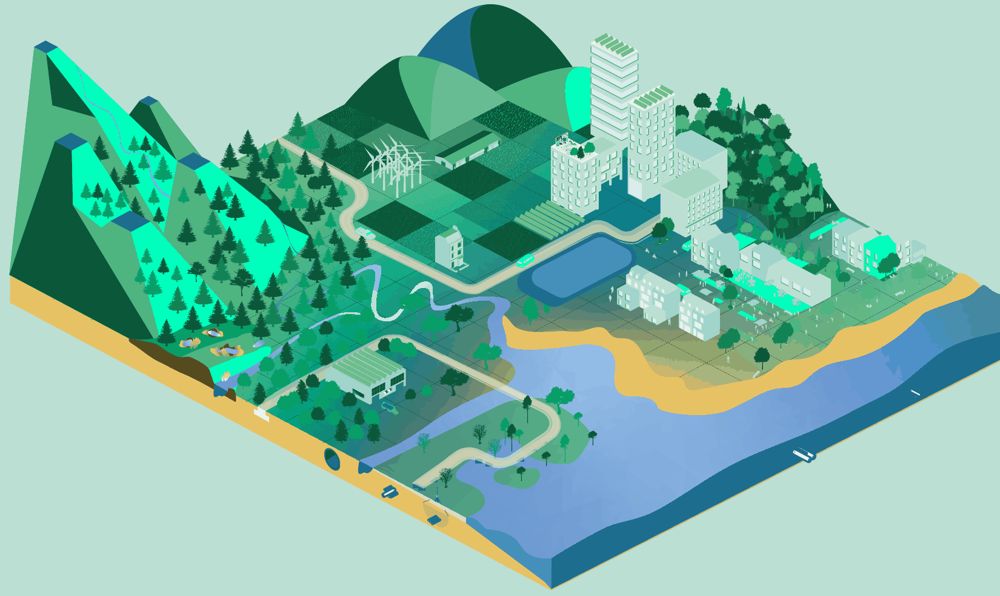

Dark Matter Labs / Bioregioning Tayside
Catch water this winter
Information for farmers
November 2026
SEPA restricted farm water licences in Tayside in 2025 and again in 2026. The rain still comes in winter. This sheet sets out what you can build on your own land to hold some of it, without asking anyone. It also says when you do need to ask.

Draft for checking. Prepared by Dark Matter Labs with Bioregioning Tayside in November 2026. SEPA and the Farm Advisory Service should read it before it goes to farmers.
Three things you can do without permission
Dig a pond or scrape
Dig it into the ground, away from any burn. Don't build a bank or dam to hold the water up. A low corner of a field that lies wet in winter is often the right spot.
Catch water off your roofs
Run the downpipes from sheds and steadings into tanks or a pond. Rain off a roof has not reached a burn, so you are not taking water from the river.
Put a SuDS at the steading
A swale, a grass strip or a small pond to hold yard and roof run-off. SEPA does not regulate the SuDS itself. It does have rules for what leaves it.
SuDS means sustainable drainage system: a ditch, strip or pond that slows and cleans run-off before it reaches a burn.
Before you dig
If you can tick every line, you can go ahead.
Ticks are not saved. Use the list to talk it through with your contractor.
Is it a wetland?
SEPA's rules treat a wetland as ground shaped by being often flooded or waterlogged. Digging in a wetland that connects to a burn or loch needs a SEPA permit.
A field you crop or graze in summer that lies wet in winter is often not a wetland. Rushes, reeds, moss, peat, or water that runs in and out all year are signs that it might be one. If you are not sure, ask SEPA before you dig.
When you do need to ask
- You plan to irrigate crops with it. Ask Rural Payments (RPID) for a screening opinion first. There is no minimum size for this rule.
- You will pump more than 10 cubic metres a day (10,000 litres) out of a burn or the ground. Between 10 and 50 a day you register with SEPA. Over 50 a day you need a licence.
- You will pump out of a pond that is fed by field drains or groundwater. SEPA asks you to register this. Building the pond needs no permission; taking water out of it does. Roof-fed ponds and tanks are not covered by this rule.
- The pond is on a burn, or in marsh or bog. Ask SEPA.
- The water is held above ground behind a bank and could hold 10,000 cubic metres or more. That is a reservoir in law and must be registered with SEPA. Ponds joined together count as one.
- You plan a big tank. A large tank may count as a building, which needs 28 days' notice to the council. If in doubt, ask the planning office.
- The land is in a protected site (SSSI, scheduled monument, National Scenic Area or Special Area of Conservation). Ask NatureScot or Historic Environment Scotland.
- Earth works over 1 hectare in total. Ask the council whether you need a screening opinion.
If water leaves your pond
An overflow pipe into a burn is fine if:
- it does not narrow the burn or raise the bank;
- the outfall is no bigger than it needs to be, and takes up no more than 20 metres of bank;
- the water is clean, with no yard muck, slurry or sewage, and does not discolour the burn;
- you do no work in the burn while fish are spawning, or until the young fish come out of the gravel.
How much water
Roof area (m²) × rain (mm) ÷ 1,000 = cubic metres caught
A 500 m² shed roof in a month with 100 mm of rain: 500 × 100 ÷ 1,000 = 50 cubic metres, or 50,000 litres.
Length × width × depth = cubic metres held
A scrape 20 m long, 10 m wide and 1 m deep holds about 200 cubic metres, a bit less once the sides are sloped. It is far below the 10,000 m³ reservoir limit.
One cubic metre is 1,000 litres, or about one IBC.
Help with the cost
| Scheme | What it pays | When |
|---|---|---|
| Future Farming Investment Scheme | Up to £20,000 per business. The 2025 list included water harvesting equipment. Check the 2026 list. | Opens 30 November 2026 |
| AECS irrigation lagoon | £2.94 per m³ unlined, £8.20 lined, £35.46 per metre of roof-water pipe. Up to £40,000. Only in target areas, and the lagoon must not be on a burn. | The 2027 round is not yet announced |
| AECS pond for wildlife | £4.50 per m², up to 600 m² a pond | With the AECS round |
| Farm Advisory Service | Free advice, and a basic farm water resilience audit | Now. Helpline 0300 323 0161 |
Grant schemes often need approval before you start. If you want a grant, apply first and dig after.
Who to ask
- Farm Advisory Service: 0300 323 0161, fas.scot ↗
- SEPA, for burns, wetlands and pumping: sepa.org.uk ↗
- Rural Payments (RPID), for irrigation screening and grants: ruralpayments.org ↗
- Your council planning office: Perth & Kinross, Angus or Dundee
- NatureScot, for protected sites and species: nature.scot ↗
- Buried services: Linesearch beforeUdig ↗
What this is based on
This is a plain summary of the rules as of November 2026. It is not legal advice. The rules changed on 1 November 2025, when SEPA moved water rules into new regulations (EASR). Some SEPA web pages still use the old wording. Three points are our reading of the law, not something SEPA has written down: that rain off a roof is not "taking water", that a pond fully below ground is not a reservoir, and that a large tank may need notice to the council.
- Environmental Authorisations (Scotland) Regulations 2018, Schedule 9, general binding rules: legislation.gov.uk ↗
- SEPA, engineering activities that do not need an authorisation: sepa.org.uk ↗
- SEPA, abstraction from an offline impoundment (EASR-SC-047): sepa.org.uk ↗
- Farm Advisory Service, EASR explained for farmers, February 2026: fas.scot ↗
- Reservoirs (Scotland) Act 2011, section 1: legislation.gov.uk ↗
- Permitted development, Class 18 agricultural operations: legislation.gov.uk ↗
- Environmental Impact Assessment (Agriculture) (Scotland) Regulations 2017: legislation.gov.uk ↗
- SEPA, reuse of greenfield soils: sepa.org.uk ↗
- Rural Payments, irrigation lagoon capital item: ruralpayments.org ↗
- Rural Payments, Future Farming Investment Scheme: ruralpayments.org ↗
- SEPA, Tayside abstraction restrictions, August 2026: sepa.org.uk ↗